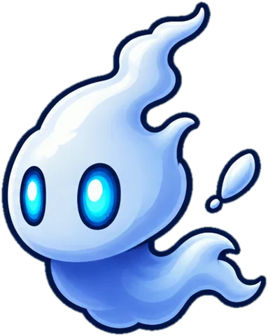

 Ghost
GhostTap a stage to read its story.
Glacisp is a tiny floating blue teardrop spirit - a round translucent body with a pointed tail that flickers like a candle flame and two wide pale eyes that seem to look in slightly different directions at once. It drifts through the fog-banks of Ghost Hollow barely disturbing the air, leaving a faint trail of cold mist. No one is certain whether it is the spirit of something that was once alive or a piece of the Hollow itself that learned to move. It collects cold air in its body and releases it as brief freezing puffs when startled.
Field note: Glacisp is always slightly colder than the surrounding air - by exactly 3 degrees, always exactly 3.
Ghost Hollow. Glacisp and its family are found in the Ghost Hollow. See everyone who lives there.
Share a Bond Food that matches its types to become friends. Glacisp loves:
A Bond Food is not a trick. It joins your spirit with the Kimuro's spirit, and only when it chooses you.
Print the Kimuro adventure packs: mazes, cards, a board game and Bond Mark medals.
See the printable packs